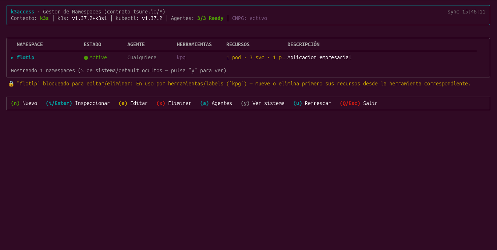

Pre-Flight obligatorio
Comprueba el binario kubectl, el contexto activo, la conectividad con el servidor y
agentes k3s, permisos RBAC y la presencia del CRD de CloudNativePG antes de abrir el dashboard.
k3access valida primero que kubectl esté instalado y conectado a tu cluster k3s,
y luego te ofrece una interfaz TUI en vivo para crear, inspeccionar, asignar afinidad por agente y gestionar
namespaces bajo el contrato compartido tsure.io/*.

Una única herramienta responsable del ciclo de vida de los Namespace,
protegiendo tus cargas de trabajo y respetando el resto del ecosistema tsure.
Comprueba el binario kubectl, el contexto activo, la conectividad con el servidor y
agentes k3s, permisos RBAC y la presencia del CRD de CloudNativePG antes de abrir el dashboard.
Ningún namespace puede editarse ni eliminarse si está protegido, tiene labels de uso
tsure.io/<tool> o mantiene pods/recursos activos en cualquier agente k3s.
Asigna cada namespace a un agente específico (k3s-agent1, k3s-agent2),
un rol (rol:apps) o un selector personalizado, validando qué nodos coinciden en vivo.
tsure.io/*
Totalmente compatible con kpg: nunca sobrescribe labels de otras herramientas y ofrece
auditoría explícita únicamente cuando existen labels huérfanos con 0 recursos reales.
Todas las operaciones ejecutan child_process.spawn('kubectl', args) con
shell: false, timeouts controlados y validación estricta DNS-1123.
Ejecuta con Node.js v20+ o genera un binario autónomo con esbuild +
node --build-sea sin dependencias nativas.
Explora las 7 vistas reales de k3access. Haz clic sobre cualquier captura para abrirla
en pantalla completa y navegar con ← / →.
Las demás herramientas del ecosistema (como kpg) solo consumen namespaces existentes y
declaran su uso mediante labels propios. k3access respeta ese contrato al pie de la letra.
apiVersion: v1
kind: Namespace
metadata:
name: mi-app-1
labels:
tsure.io/managed: "true" # Aplicado por k3access
tsure.io/kpg: "true" # Propiedad exclusiva de kpg
annotations:
tsure.io/description: "Servicios de Mi App 1"
scheduler.alpha.kubernetes.io/node-selector: "kubernetes.io/hostname=k3s-agent2"
tsure.io/node-selector: "kubernetes.io/hostname=k3s-agent2"scheduler.alpha.kubernetes.io/node-selector aplica automáticamente la afinidad a los pods
nuevos cuando el plugin de admisión PodNodeSelector está habilitado en
k3s-server. Además se guarda tsure.io/node-selector para que otras
herramientas del ecosistema puedan leerlo directamente.
Prueba en vivo cómo evalúa k3access si un namespace puede editarse (e) o
eliminarse (x):
curl en segundos
Los ejecutables autocontenidos no requieren Node.js: solo necesitas kubectl configurado en tu
equipo. El instalador detecta siempre la última versión publicada, verifica su hash
SHA-256 y actualiza automáticamente si vuelves a ejecutarlo.
curl -fsSL https://raw.githubusercontent.com/Tsurematsu/k3acess/main/scripts/install.sh | bash# Validar kubectl y cluster sin abrir TUI
k3access --check
# Abrir el dashboard interactivo
k3access
# Forzar reinstalación (opcional)
curl -fsSL https://raw.githubusercontent.com/Tsurematsu/k3acess/main/scripts/install.sh | bash -s -- --forcecurl.exe -fsSL https://raw.githubusercontent.com/Tsurematsu/k3acess/main/scripts/install.ps1 -o "$env:TEMP\k3access-install.ps1"; powershell -ExecutionPolicy Bypass -File "$env:TEMP\k3access-install.ps1"irm https://raw.githubusercontent.com/Tsurematsu/k3acess/main/scripts/install.ps1 | iex
# Después abre una nueva terminal y ejecuta:
k3access --check
k3accessgit clone https://github.com/Tsurematsu/k3acess.git k3access
cd k3access
npm install
npm run build
npm start# Chequeo Pre-Flight + listado sin TUI
node dist/index.js --check
# Chequeo de tipos y pruebas unitarias
npm run typecheck && npm test
# Generar ejecutables autocontenidos en build/
npm run build:seaNavegación rápida y predecible sin soltar el teclado.